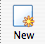
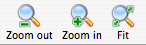
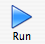
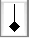
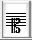
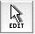
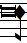
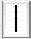
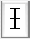

The first thing you need to do to start transcription is to pre-process the music images you wish to transcribe. For now, we will begin with a single page. From the tool bar, click on the third icon . Find the file ``MarL_1585_M.0578_I.Nc.2_01_028'', and double-click on it to open it. You should now see the image that you are going to work with as in figure 3. If at any time the image you are working with does not fit the screen, use the ``Zoom'' buttons on the tool bar  to adjust the image size.
To pre-process this image, click ``Run'' on the tool menu . In a few seconds the pre-processed version of this page will appear on your screen. Once your page is pre-processed, the first editing step must be done. The page is color coded during pre-processing, and it is necessary to check that everything is correctly labeled. In this example, there is only one correction to be made: there is a bit of black border on the upper left-hand side of the image which should be erased. Double-click on any part of the black border, and it will all turn red (Figure 4). To erase the border, right-click (or <ctrl-click>) over the red, and a colour-menu will appear (Figure 5). Choose ``blank'', and the border will fade out.
Once the page has been corrected at this stage, it is ready for transcription. Simply click on the ``Run'' icon for a second time, and wait a few seconds for the process to complete. If the dialogue box with the transcribing process information seems to stop and become idle, make sure the command ``Close this dialog if process completes successfully'' is selected with a tick. This will ensure that in future you will not have to close the dialogue box yourself every time you transcribe a page. What should appear before you is a screen split into two sections, with your original page showing on the top half, and the newly transcribed page lined up below (Figure 6). In between the two screens is a third menu bar, the music editing bar.
Before you begin making corrections, it is a good idea to learn how to move around the page and familiarize yourself with the interface. For now, you will be working on the bottom screen - the top screen will be for reference only. As you can see, the first symbol on the bottom screen is red, while the rest are black. The red symbol indicates where Aruspix is focussed - it is the cursor. Click on any symbol, and it will become red. You can also use the arrow keys to move around the page. There can only be one red symbol at a time - you cannot work with multiple symbols.
While you move around the score, you may notice that the music editing bar changes from time to time. Musical symbols in Aruspix are grouped into families, and the entire family of each symbol will appear in the editing bar when one of its members is highlighted. If you return the cursor to the top of the page, you will see that the first symbol is a long, and the Notes family shows in the editing bar. Move the cursor to the next symbol, the flat, and the editing bar will now show the variants family.
Any member of a family of symbols is interchangeable with any other member of the same family. If you go back the first symbol again, and then click on the Semi-Minim  in the editing bar, the Long will be changed into a Semi-Minim. Try changing it back by clicking on the Long button in the editing bar.
As you can see by comparing the two screens, the first long should actually be a clef. Because notes and clefs are in different families, you cannot transform the Long into a clef. You must delete it and then replace it. To delete the Long, click on it and then press <delete>. You can use either of the two delete keys (see reference for more details). Once the Long has been deleted, click on ``Insert'' in the editing bar . The arrow for the mouse should become a pencil. Next, use the pencil to click on the ``Keys'' button and select the third clef . Double-click on the staff where you want to insert this clef, and it will appear. To return to the editing mode, select ``Edit'' from the editing bar , and the pencil will be replaced by the arrow. You will need to click on a symbol to make the cursor reappear.
The next correction that needs to be made is for the key signature. The flat is a third too low, and needs to be moved up. There are two ways to do this, both of which are quite simple. You can either drag the flat into the right place using the mouse, or select it and use <ctrl-arrow up> or <ctrl - arrow down> to move it up or down one pitch at a time. Try moving the flat up and down using these two methods.
There are three more corrections for the first line that are exactly the same as for the key signature. The first note, the second rest, and the custos are all a third too low, and need to be moved up. The seventh note, a Minim, needs to be changed into a Semi-Minim. You can do this the same way you changed the initial Long into a Semi-Minim: Click on the Minim, then click on the Semi-Minim in the editing bar.
Once you have done this, use the right arrow key to move the cursor to the second line and continue editing. The sharp in front of the first note needs to be moved up, and also the custos. Move on to the third line - first rest needs to be changed from a minim rest to a semi-minim rest. Then the third rest of the next group of rests needs to be moved down. The breve before the next fusa () needs to be replaced with a sharp. Delete the breve, and then try a short-cut for inputting the sharp. Make the sure fusa is selected and then press <d>. The sharp should appear at the correct pitch. There is a similar shortcut for inputting flats - press <b>. There is no shortcut for the natural sign.
As you continue to practice editing this page, you should find that simple replacements, deletions, or pitch corrections are the only procedures you need to use. At the end of the piece, you will need to delte the extra long and clef, and then insert two single bar lines to create the final double bar line. The bar line is found in the variant family, second to last . Do not confuse this with the Long rest, found in the notes family . Erase the extra bar-line in the final staff, and you are finished making corrections.
The final step in editing is adjusting the alignment - making sure that the symbols on the bottom screen are aligned with those on the top screen. This cannot be done just by looking, so there is a special tool in Aruspix for this procedure. Move the cursor to the first clef at the top of the page, then press <ctrl-b>. This activates the highlight function, and you will see on the top screen that a row of hand-drawn blue symbols appears overtop of the original image (Figure 7).
The cursor now appears in both screens simultaneously. To move any of the blue symbols on the top screen, you need to move the corresponding symbol on the bottom screen. Try to align the blue symbols with their matching symbols underneath as closely as possible, either by dragging them with the mouse, or by using the following keyboard commands: